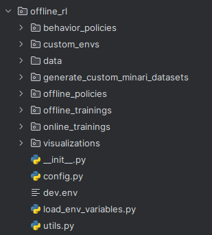

%%capture
%load_ext autoreload
%autoreload 2
%matplotlib inline
%load_ext tensorboard
%set_random_seed 12
%presentation_style
%load_latex_macros;
# %tensorboard --logdir ../src/training_rl/offline_rl/ --host localhost
from src.offline_rl.load_env_variables import load_env_variables
# load_env_variables("/home/jovyan/tfl-training-rl/src/training_rl/offline_rl/")
load_env_variables()
import warnings
import os
import gymnasium as gym
from src.offline_rl.custom_envs.custom_2d_grid_env.obstacles_2D_grid_register import ObstacleTypes
from src.offline_rl.custom_envs.custom_2d_grid_env.simple_grid import Custom2DGridEnv
from src.offline_rl.custom_envs.custom_envs_registration import RenderMode
from src.offline_rl.offline_policies.offpolicy_rendering import offpolicy_rendering
from src.offline_rl.utils import load_buffer_minari
from src.offline_rl.visualizations.utils import (
get_state_action_data_and_policy_grid_distributions,
snapshot_env,
)
from src.offline_rl.utils import widget_list
from src.offline_rl.custom_envs.custom_envs_registration import EnvFactory
from offline_rl.behavior_policies.behavior_policy_registry import BehaviorPolicy2dGridFactory
from offline_rl.generate_custom_minari_datasets.generate_minari_dataset import (
create_minari_datasets,
)
if not os.environ.get("DISPLAY"):
os.environ["MUJOCO_GL"] = "egl"
warnings.filterwarnings("ignore")
# To get access to the registered environments.
Exercise: Minari data collection#
In this exercise you don’t have any homework. The idea is to play around with it to get familiar with the code (notebooks and source code) and with the way we collect data.
Remember that the pipeline for offline learning will be the following:

In this notebook we will be exploring the steps 1-2-3 . It would be a good idea now to give a look to the code structure:
You can also give a look to Minari documentation if needed.
STEP 1: Create the environments#
# List of different environments
ENV_LIST = [
EnvFactory.Grid_2D_8x8_discrete,
"InvertedPendulum-v4",
"Humanoid-v4",
"AdroitHandHammer-v1",
"HalfCheetah-v4",
]
# obstacles to be used with the 2d grid-world
grid_world_obstacles = [
ObstacleTypes.obstacle_8x8_top_right,
ObstacleTypes.obst_free_8x8,
]
# behavior policies to be used with 2d grid-world
behavior_policy_grid_world = [
BehaviorPolicy2dGridFactory.suboptimal_8x8,
BehaviorPolicy2dGridFactory.random,
BehaviorPolicy2dGridFactory.deterministic_8x8,
]
selected_environment = widget_list(ENV_LIST, description="Mixed envs.")
selected_obstacle = widget_list(grid_world_obstacles, description="grid obst.")
selected_grid_world_policy = widget_list(behavior_policy_grid_world, description="grid policy")
Select and render behavior policies
behavior_policy = BehaviorPolicy2dGridFactory.random
if isinstance(selected_environment.value, EnvFactory):
env = EnvFactory[selected_environment.value].get_env(render_mode=RenderMode.RGB_ARRAY_LIST)
if isinstance(env.unwrapped, Custom2DGridEnv):
env.set_new_obstacle_map(selected_obstacle.value.value)
behavior_policy = selected_grid_world_policy.value
else:
env = gym.make(selected_environment.value, render_mode="rgb_array_list")
offpolicy_rendering(
env_or_env_name=env,
render_mode=RenderMode.RGB_ARRAY_LIST,
behavior_policy=behavior_policy,
num_frames=100,
fps=10,
)
STEP 2: Create Minari datasets#
DATA_SET_IDENTIFIER_I = "_collected_data_nb_92"
NUM_STEPS_I = 500
data_set_config = create_minari_datasets(
env_name=env.unwrapped.spec.id,
dataset_identifier=DATA_SET_IDENTIFIER_I,
num_collected_points=NUM_STEPS_I,
behavior_policy=behavior_policy,
)
Congratulations! You have created your first Minari dataset. Take a look at src/offline_rl/data.
STEP 3: Feed dataset to Tianshou ReplayBuffer#
buffer_data = load_buffer_minari(data_set_config.data_set_name)
print(f"The number of dataset points is {len(buffer_data)}")
for elem in buffer_data:
print(elem)
break
Let’s give a look to the collected 2d grid world data
Useful information:
In our grid world environment, the agent’s position is represented as \((x_1, x_2)\), with \(x_1/x_2\) the vertical/horizontal coordinates. Observations are represented as a one-hot encoded vector of dimensions \(x_1 \times x_2\), for example, a 64-dimensional vector in an 8x8 grid,
The action is represented by an integer in the range of [0, 1, 2, 3], each indicating a direction:
0: (-1, 0) - UP
1: (1, 0) - DOWN
2: (0, -1) - LEFT
3: (0, 1) - RIGHT
# Compute state-action data distribution
if isinstance(env.unwrapped, Custom2DGridEnv):
state_action_count_data, _ = get_state_action_data_and_policy_grid_distributions(
buffer_data, env
)
snapshot_env(env)
else:
raise ValueError(f"To analyze the data the environment should be of type {Custom2DGridEnv}.")
References#
[Fu.Justin et. al.] D4RL: Datasets for Deep Data-Driven Reinforcement Learning